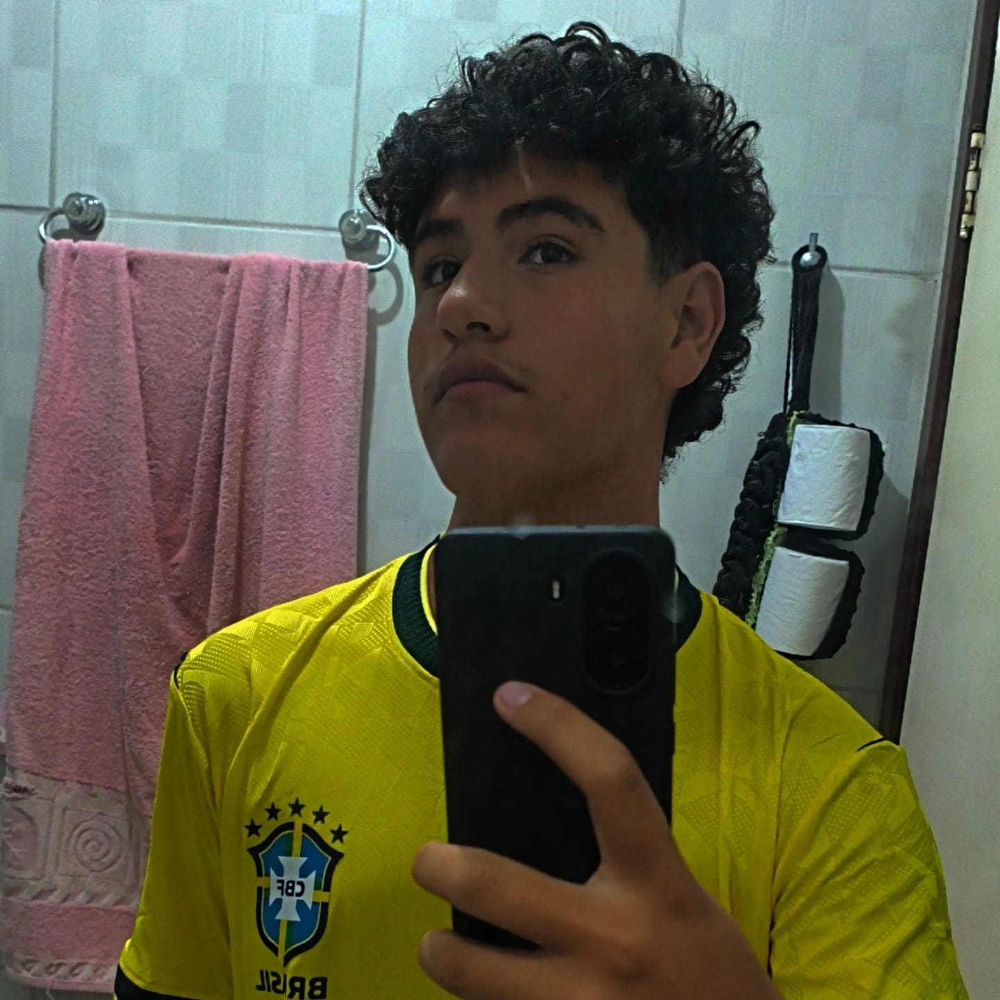

Quem somos?
Por trás da interface e do desenvolvimento da IronTech, está uma equipe de futuros profissionais da tecnologia. Somos alunos do 2º Ano do Ensino Médio Técnico em Informática, e este site foi projetado e codificado por:

 GitHub
GitHub
 Instagram
Instagram
Participação dos Alunos
-
Gabriel Pereira
- Desenvolveu a página inicial
- Criou a parte das armaduras
- Organizou o visual do site
-
Gabriel Rodrigues
- Pesquisou informações sobre Tony Stark
- Adicionou imagens ao projeto
- Ajudou na página dos filmes
-
Pedro Saito
- Criou a página de encomendas
- Montou os cards das armaduras
- Adicionou preços e características
-
Marcelo Henrique
- Fez a página de login
- Adicionou campos do formulário
- Testou links e navegação